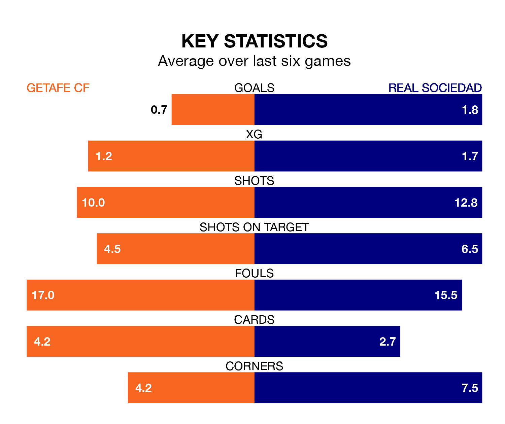

Real Sociedad travel to Getafe CF on Sunday lunchtime in La Liga.
The visitors come into the game on the back of a draw in their last match, having tied with Almería 2-2 at home, with goals from Mikel Oyarzabal and Sheraldo Becker.
Getafe also drew their last match, 0-0 against Rayo Vallecano.
With Álex Remiro between the sticks, La Real can rely on one of the league's safest pair of hands. He has kept 12 clean sheets in his 30 appearances this season, and only one other 'keeper – Athletic Club Bilbao's Unai Simón – has been able to prevent the opposition scoring on more occasions in La Liga.
In Getafe's net, David Soria has 10 clean sheets in 31 games. He has conceded a goal every 70 minutes, 60% more often than the 110 minutes between goals for Remiro Gargallo.
In the last 10 years, Getafe and La Real have played each other on 17 occasions. Getafe won eight of them, La Real six, and they drew three times.
On average, Getafe scored 1.2 goals and la Real 1.3 in those matches.
Their last meeting was on September 24, when La Real won 4-3 at home.
With 45 goals in 31 games so far this season, la Real are scoring more than average in the league with 1.5 goals per game. And they are conceding fewer than average, letting in 33 goals at a rate of 1.1 per game.
The hosts, meanwhile, are below average scorers, with 1.2 goals per game, compared to a league average of 1.3. They have conceded 1.4 goals per game.
Getafe are in disappointing form in La Liga, with one win and two draws from their last six games.
With three wins and a draw over that period, the away team's form is better – they have taken 10 points from 18, compared to Getafe's five.
La Real are sixth in the table after 31 games, of which they have won 13 and drawn 11, earning 50 points.
The home side are four places behind La Real in 10th, with nine wins and 12 draws putting them on 39 points.
Updated: 15:40 (UTC), 18/04/24